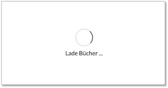
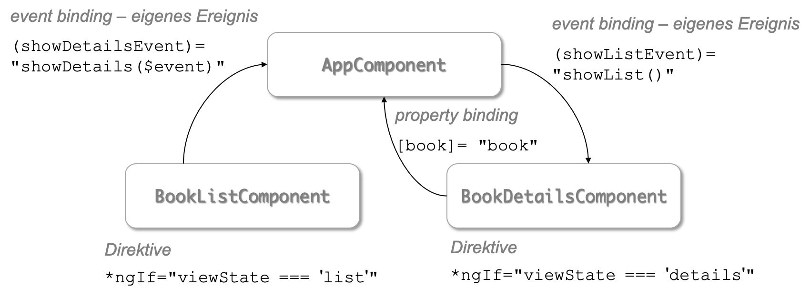
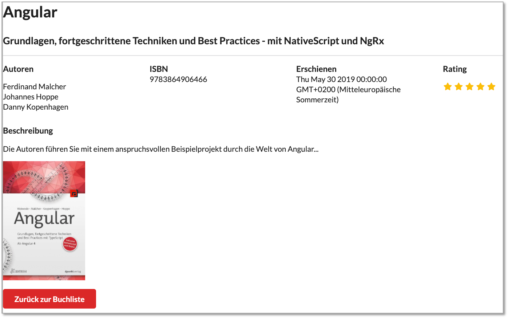

Bücher-App¶
Das folgende Beispiel ist dem Buch
Ferdinand Malcher, Johannes Hoppe, Danny Koppenhagen: "Angular: Grundlagen, fortgeschrittene Themen und Best Practices" dpunkt.verlag, 2. Auflage, ISBN: 978-3-86490-646-6, 2019 Link
entnommen (und nur unwesentlich geändert).
In der App soll eine Liste von Büchern angezeigt werden, für jedes einzelne Buch soll eine Detailansicht existieren und Bücher können hinzugefügt werden.
Projekt anlegen¶
Wir gehen wie in beschrieben vor. Wir wollen unsere App book-app nennen.
ng new book-app
Wir werden gefragt, ob wir Routing verwenden möchten (Antwort: y) und welches StyleSheet-Format wir verwenden (Antwort: CSS):
? Would you like to add Angular routing? Yes
? Which stylesheet format would you like to use? CSS
Nachdem das Projekt erstellt wurde, wechseln wir im Terminal in das Verzeichnis book-app
cd book-app
und rufen darin
npm install
auf, um alle in package.json definierten Abhängigkeiten und Module einzubinden. Danach kann die Anwendung durch Eingabe von
ng serve
gestartet werden. Öffnen Sie den Browser und geben Sie als URL http://localhost:4200/ ein. Es erscheint die Angular-Projekt-Startseite (siehe auch Erstes Angular-Projekt erstellen).
Öffnen Sie nun noch in Ihrer IDE (z.B. IntelliJ IDEA) das Projekt book-app, um Ihre Implementierungen durchzuführen. Zunächst kümmern wir uns allerdings erst noch um das Aussehen des Projektes - um moderne, einheitliche Styles.
CSS-Framework Semantic UI einbinden¶
Es ist üblich, eines der bekannten Style-Frameworks (z.B. Bootstrap oder Material Design) einzubinden. Für die Bücher-App soll dafür Semantic UI verwendet werden. Geben Sie dazu im Terminal in dem book-app-Verzeichnis
npm install semantic-ui-css
ein. Durch diese Anweisung werden die benötigten Style-Dateien geladen und unter dem Ordner node_modules/semantic-ui-css gespeichert. Diese müssen jetzt nur noch in das Projekt eingebunden werden. Öffnen Sie dazu in Ihrer IDE die Datei angular.json. Bei dieser Datei handelt es sich um eine JSON-Datei, die für die Konfiguration unserer Angular-Anwendung zuständig ist. In der angular.json-Datei ändern wir unter "projects"→"book-app"→"architect"→"build"→"options"→"styles" den Eintrag von
"styles": [
"src/styles.css"
],
auf
"styles": [
"node_modules/semantic-ui-css/semantic.css"
],
Die gleiche Änderung führen wir in angular.json unter "test" (statt "build") durch, um die Styles auch beim Testen einzubeziehen. Also unter "projects"→"book-app"→"architect"→"test"→"options"→"styles" ebenfalls nach
"styles": [
"node_modules/semantic-ui-css/semantic.css"
],
ändern.
Um zu testen, ob das Einbinden der Semantic-UI-Styles geklappt hat, öffnen wir in der IDE die Datei app.component.html und löschen darin alles bis auf <router-outlet></router-outlet>. Stattdessen geben wir davor ein (Listing zeigt auch <router-outlet></router-outlet> - also die dann vollständige Datei app.component.html):
<div class="ui active inverted dimmer">
<div class="ui text loader large">Lade Bücher ...</div>
</div>
<router-outlet></router-outlet>
Wir gestalten also das Template unserer App-Komponente als ein div im div. Beiden divs werden CSS-Klassen aus dem Semantic-UI-Framework zugeordnet (siehe z.B. Klasse loader).
Unsere Webseite sollte nun so aussehen:

Success
Der erste Teil unserer Bücher-App ist erstellt! Wir haben eine Anwendung erstellt und diese aufgerufen. Wir haben ein CSS-Framework eingebunden und erste Änderungen am HTML-Code vorgenommen. Unter http://localhost:4200/ ist unsere Anwendung nun im Browser sichtbar und alle unseren zukünftigen Änderungen am Code werden automatisch (ohne erneuten Aufruf) der Seite dargestellt.
Datenmodell und Daten¶
Wir wollen Details (Daten) über Bücher speichern und verwenden dazu die JavaScript Object Notation (JSON). Zunächst wird Angular jedoch das dazugehörige Datenmodell bekannt gemacht. Dies geschieht mithilfe eines Interfaces. Wir erstellen ein solches Interface mithilfe der Angular CLI im Terminal (Sie sind im book-app-Verzeichnis):
ng g interface shared/book
Die obige Anweisung erstellt eine Datei book.ts im Ordner src/app/shared. Der shared- Ordner wird automatisch angelegt. In der obigen Anweisung steht g für generate (hätte man auch schreiben können).
In der IDE öffnen wir die Datei book.ts. Sie enthält nur die Interface-Deklaration ohne Inhalt:
export interface Book {
}
Wir implementieren das Interface wie folgt:
export interface Book {
isbn: string;
title: string;
authors: string[];
published: Date;
subtitle?: string;
rating?: number;
thumbnails?: Thumbnail[];
description?: string;
}
export interface Thumbnail {
url: string;
title?: string;
}
Das bedeutet, dass unser Datenmodell so aussieht, dass die Details über ein Buch folgende Daten beinhalten: isbn, title, authors, published, subtitle, rating, thumbnails, description. Die Fragezeichen hinter den Bezeichnern geben an, dass die jeweilige Eigenschaft optional ist, d.h. dass ihr kein Wert zugeordnet werden muss. Die Eigenschaft thumbnail ist vom Typ Thumbnail-Array. Dieser Typ ist kein Standard-TypeScript-Typ, sondern von uns definiert. Thumbnail definieren wir ebenfalls als Interface, bestehend aus 2 Eigenschaften url und (optional) title. Die Definition dieses Interfaces erfolgt ebenfalls direkt in book.ts. Wir haben also 2 Interfaces diefiniert: Book und Thumbnail. Die Daten werden zunächst direkt in eine neu zu erstellende Komponente zum Anzeigen der Bücher-Liste eingebunden:
Bücherliste erstellen¶
Zur Anzeige aller gespeicherten Bücher erstellen wir eine neue Komponente book-list. Siehe dazu auch Angular → Eine neue Komponente erzeugen:
ng generate component book-list
Es ensteht ein neuer Ordner src/app/book-list, welcher die 4 Dateien:
book-list.component.cssbook-list.component.htmlbook-list.component.spec.tsbook-list.component.ts
enthält. In der IDE öffnen wir zunächst die book-list.component.html. Sie sieht so aus:
<p>book-list works!</p>
Wir ersetzen den Inhalt vollständig durch den folgenden HTML-Code:
<div class="ui middle aligned selection divided list">
<a *ngFor="let book of books" class="item">
<img class="ui tiny image"
*ngIf="book.thumbnails && book.thumbnails[0] && book.thumbnails[0].url"
[src]="book.thumbnails[0].url" />
<div class="content">
<div class="header">{{ book.title }}</div>
<div *ngIf="book.subtitle" class="description">{{ book.subtitle }}</div>
<div class="metadata">
<span *ngFor="let author of book.authors; last as l">{{ author }}
<span *ngIf="!l">, </span>
</span>
<br />
ISBN {{ book.isbn }}
</div>
</div>
</a>
</div>
Obiger Code enthält einige Strukturdirektiven (siehe Angular → *Strukturdirektiven)). So läuft bspw. die *ngFor-Direktive in der zweiten Zeile durch die Liste books und erzeugt für jedes Buch aus der Liste books einen Hyperlink <a>. Diese existiert jedoch noch gar nicht, so dass unsere App sich derzeit nicht ausführen lässt. Die erste *ngIf-Direktive in der vierten Zeile prüft zunächst, ob das Array book.thumbnails überhaupt existiert und wenn ja, ob dieses Array einen ersten Eintrag hat book.thumbnails[0] und wenn das der Fall ist, ob dieser erste Eintrag auch eine url enthält (siehe Interfaces Book und Thumbnail). Wenn diese url existiert, wird durch ein Property-Binding (siehe Angular → [Property Binding]) dem src-Attribut von <a> der Wert zugeordnet, der unter book.thumbnails[0].url im JSON gespeichert ist.
Die Liste der Autoren eines Buches wird ebenfalls mithilfe der Strukturdirektive *ngFor durchlaufen. Außerdem findet die Hilfsvariable last dieser Strukturdirektive Anwendung (siehe Angular → *Strukturdirektiven)). Alle Autoren werden durch Komma getrennt. Nur nach dem letzten Autor wird kein Komma hinzugefügt. Dies gelingt mithilfe der Strukturdirektive *ngIf und der Abfrage, ob es sich nicht um das letzte Element handelt - dann Komma.
Wir benötigen jetzt für unsere Komponente noch die Liste der Bücher - ein Book-Array. Dieses legen wir in der Datei book-list.component.ts an. Wir öffnen diese Datei - sie sieht wie folgt aus:
import { Component, OnInit } from '@angular/core';
@Component({
selector: 'app-book-list',
templateUrl: './book-list.component.html',
styleUrls: ['./book-list.component.css']
})
export class BookListComponent implements OnInit {
constructor() { }
ngOnInit(): void {
}
}
Die (TypeScript-)Klasse BookListComponent enthält zwei Methoden:
- den Konstruktor
constructor() { } ngOnInit(): void { }
ngOnInit() ist eine Methode aus dem Interface OnInit. Dabei handelt es sich um einen sogenannten Lifecycle-Hook (siehe Angular → Lifecycle-Hooks). Die Methode ngOnInit() wird immer dann (automatisch) ausgeführt, wenn die Komponente geladen wird.
Wir ersetzen den bisherigen Code der Datei book-list.component.ts durch:
import { Component, OnInit } from '@angular/core';
import {Book} from '../shared/book';
@Component({
selector: 'app-book-list',
templateUrl: './book-list.component.html',
styleUrls: ['./book-list.component.css']
})
export class BookListComponent implements OnInit {
books: Book[];
constructor() { }
ngOnInit(): void {
this.books = [
{
isbn: '9783864906466',
title: 'Angular',
authors: ['Ferdinand Malcher', 'Johannes Hoppe', 'Danny Kopenhagen'],
published: new Date(2019, 4, 30),
subtitle: 'Grundlagen, fortgeschrittene Techniken und Best Practices - mit NativeScript und NgRx',
rating: 5,
thumbnails: [{
url: 'https://ng-buch.de/cover2.jpg',
title: 'Buchcover'}],
description: 'Die Autoren führen Sie mit einem anspruchsvollen Beispielprojekt durch die Welt von Angular...',
},
{
isbn: '9783864903274',
title: 'React',
authors: ['Oliver Zeigermann', 'Nils Hartmann'],
published: new Date(2016, 6, 17),
subtitle: 'Die praktische Einführung in React, React Router und Redux',
rating: 3,
thumbnails: [{
url: 'https://ng-buch.de/cover1.jpg',
title: 'Buchcover'
}],
description: 'React ist ein JavaScript-Framework zur Entwicklung von Benutzeroberflächen ...',
},
{
isbn: '978-3-86490-578-0',
title: 'Effective Java',
authors: ['Joshua Bloch'],
published: new Date(2018, 9, 1),
subtitle: 'Best Practices für die Java-Plattform',
rating: 3,
thumbnails: [{
url: 'https://www.dpunkt.de/common/images/cover_masterid/300/13216.jpg',
title: 'Buchcover'
}],
description: 'Seit der Vorauflage von \"Effective Java\" hat sich Java dramatisch verändert...',
}
];
}
}
Somit existiert die Eigenschaft books für die Komponente nun (siehe books: Book[]). Auf diese Eigenschaft kann innerhalb der Klasse mit this.books zugegriffen werden. Dies passiert auch in der ngOnInit()-Methode. Dort wird das Array mit Daten befüllt (mit zunächst 3 Büchern). Die Syntax entspricht der JavaScript Object Notation (JSON).
Damit unsere Komponente überhaupt sichtbar ist, binden wir sie noch in unsere Root-Komponente ein. Der Selektor unserer book-list-Komponente ist app-book-list. Wir binden diesen Selektor als HTML-Element in app.component.html ein.
<div class="ui active inverted dimmer">
<div class="ui text loader large">Lade Bücher ...</div>
</div>
<router-outlet></router-outlet>
<app-book-list></app-book-list>
<router-outlet></router-outlet>
Die App ist nun ausführbar. Im Browser erscheint folgende Darstellung:
Success
Der zeite Teil unserer Bücher-App ist erstellt! Wir haben zwei Interfaces (Book und Thumbnail) und eine neue Komponente (book-list) erstellt. Wir haben Direktiven verwendet (*ngFor und *ngIf), um durch Daten zu manövrieren und diese entsprechend darszustellen. Wir haben Daten im JSON-Format gespeichert.
Datenfluss zwischen Komponenten¶
In diesem Abschnitt wird der Datenfluss von Eltern- auf Kindkomponenten und von Kind- auf Elternkomponenten betrachtet. Letzteres erreicht man über event binding (siehe Angular→Event Binding). Wir betrachten zunächst den Datenfluss von Eltern- auf Kindkomponenten. Das grundlegende Prinzip dabei ist das property binding (siehe dazu Angular → [Property Bindings]).
Datenfluss von Eltern- auf Kindkomponenten¶
Wir legen uns dazu zunächst eine weitere Komponente in unserer Bücher-App an - die Komponente book-list-item. Sie ist dafür zuständig, die Informationen über ein einzelnes Buch im Detail anzuzeigen. Wir werden zu dieser Detailansicht gelangen, indem wir ausgehend von der Liste der Bücher auf ein einzelnes Buch klicken - dieses wird dann im Detail angezeigt.
Wechseln Sie im Terminal in den Ordner Ihrer Bücher-App book-app und geben dort zum Erzeugen der neuen Komponente ein:
ng g c book-list-item
Im Ordner book-app/src/app entsteht eine neue Komponente (ein neuer Ordner) book-list-item mit den Dateien book-list-item.component.ts, book-list-item.component.html, book-list-item.component.css und book-list-item.component.spec.ts.
Wir kopieren zunächst den Teil aus der book-list.component.html in die book-list-item.component.html, der die Details eines Buches anzeigt. Im folgenden Tab sind jeweils die *.component.htmlgemeint.
<div class="ui middle aligned selection divided list">
<a *ngFor="let book of books" class="item">
<img class="ui tiny image"
*ngIf="book.thumbnails && book.thumbnails[0] && book.thumbnails[0].url"
[src]="book.thumbnails[0].url" />
<div class="content">
<div class="header">{{ book.title }}</div>
<div *ngIf="book.subtitle" class="description">{{ book.subtitle }}</div>
<div class="metadata">
<span *ngFor="let author of book.authors; last as l">{{ author }}
<span *ngIf="!l">, </span>
</span>
<br />
ISBN {{ book.isbn }}
</div>
</div>
</a>
</div>
<img class="ui tiny image"
*ngIf="book.thumbnails && book.thumbnails[0] && book.thumbnails[0].url"
[src]="book.thumbnails[0].url" />
<div class="content">
<div class="header">{{ book.title }}</div>
<div *ngIf="book.subtitle" class="description">{{ book.subtitle }}</div>
<div class="metadata">
<span *ngFor="let author of book.authors; last as l">{{ author }}
<span *ngIf="!l">, </span>
</span>
<br />
ISBN {{ book.isbn }}
</div>
</div>
<div class="ui middle aligned selection divided list">
<a *ngFor="let book of books" class="item">
<!-- dieses Anchorelement (Hyperlink <a>) wird gleich geändert
aber die Direktive *ngFor bleibt -->
</a>
</div>
Nachdem wir den oben gelb unterlegten Teil nach book-list-item.component.html geschoben haben, fällt auf, dass die Variable book in der Komponente book-list-item (noch) unbekannt ist. Dies wird nun geändert. Zunächst ändern das HTML-Element, das uns die Details eines Buches anzeigen soll von <a> nach <app-book-list-item> - das ist der Selektor unserer neuen Komponente.
1 2 3 4 5 6 | |
In Zeile 2 erkennt man die Verwendung des Selektors app-book-list-item, hier erfolgt der "Aufruf" unserer neuen Komponente. In Zeile 3 wird die bereits bekannte Direktive *ngFor angewendet (siehe Angular→*Strukturdirektiven), mit der wir durch unser Array von Büchern (Book[]) laufen. In Zeile 4 findet nun das property binding statt (siehe Angular → [Property Bindings])). Der Eigenschaft book wird jeweils der Wert der Variable b übergeben.
Das bedeutet, dass wir in der Elternkomponente book-list die Kindkomponente book-list-item aufrufen und in der Elternkomponente einer Eigenschaft der Kindkomponente book einen Wert zuweisen. Es erfolgt also ein Datenfluss von der Elternkoponente zur Kindkomponente unter Verwendung von property binding. Es fehlt nur noch zwei Sachen:
- die Eigenschaft
book(vom TypBook) muss noch als Eigenschaft (Objektvariable) der Komponentebook-list-temdeklariert werden. - es muss mithilfe des Decorators
@Input()aggeben werden, dass die Werte (Daten) für diese Eigenschaft "in die Komponente hineinfließen".
Beides erreichen wir durch Änderungen der Datei book-list-item.component.ts wie folgt:
1 2 3 4 5 6 7 8 9 10 11 12 13 14 15 16 17 | |
Wesentlich ist die Zeile 10. Dort sehen Sie die Deklaration der Eigenschaft book: Book und die Verwendung der Directive @Input(). Sowohl das Interface Book als auch die Directive @Input müssen noch eingebunden werden (Zeilen 1 und 2). Lassen Sie dies am besten Ihre IDE erledigen. Gehen Sie mit der Maus über die rot dargestellten Bezeichner (Book und @Input()) und wählen Sie jeweils den automatischen Korrekturvorschlag aus.
Success
Der dritte Teil unserer Bücher-App ist erstellt! Leider hat sich in der Ansicht nichts geändert. Zwar wissen wir jetzt, wie der Datenfluss von Eltern- auf Kindkomponenten erfolgt (nämlich mit property binding und der Deklaration der Eigenschaft (property) mithilfe des @Input()-Decorators). Aber der Wechsel der Ansicht ist noch nicht realisiert. Dieser soll durch ein Ereignis ausgelöst werden, nämlich wenn wir auf eines der Bücher aus der Liste klicken. Die Behandlung von Ereignissen (event binding) ist Thema des nächsten Abschnittes.
Datenfluss von Kind- auf Elternkomponenten¶
Der Datenfluss von Kind- auf Elternkomponenten kann mithilfe von event binding organisiert werden (siehe dazu Angular→Eigene Ereignisse).
Wir werden eine BookDetailsComponent erzeugen. Diese zeigt die Details eines Buches. In unserer BookListComponent definieren wir ein Ereignis, das diese Detail-Ansicht aufruft und dabei das entsprechende Buch übergibt. In der BookDetailsComponent definieren wir ein Ereignis, das die Listendarstellung aller Bücher wieder aufruft.
Wir erzeugen zunächst die BookDetailsComponent:
ng g c book-details
Wir planen folgende Kommunikation zwischen den Komponenten (Abbildung ebenfalls aus eingangs erwähntem Buch):

Wir erweitern zunächst die Komponente AppComponent um zwei weitere Eigenschaften: book vom Typ Book (die Daten eines Buches sollen ja an die Komponente BookDetailsComponent mithilfe von property binding weitergegeben werden) und einen viewState, der zwischen den beiden Ansichten BookList und BookDetails umschalten soll. Dazu vereinbaren wir einen neuen Typ ViewState, der 2 verschiedene Werte annehmen kann list und details. Die neue app.component.ts sieht dann so aus:
1 2 3 4 5 6 7 8 9 10 11 12 13 14 15 16 17 18 19 20 21 22 23 24 | |
Neben den beiden Eigenschaften book und viewState (viewState ist vom Typ ViewState - dieser wurde in Zeile 5 erstellt) wurde auch zwei Methoden hinzugefügt: showList() und showDetails(book: Book). showList() wird von der Kindkomponente BookDetailsComponent als Ereignis aufgerufen (event binding). showDetails() wird von der Kindkomponente BookListComponent als Ereignis aufgerufen und liefert als payload des Ereignisses die Informationen über das Buch mit, auf das innerhalb der Liste geklickt wurde (siehe auch Angular→Eigene Ereignisse). Die beiden Methoden schalten jeweils zwischen den viewStates um.
Im Template der AppComponent wird mittels der *ngIf-Direktive zwischen den Ansichten der beiden Komponenten BookDetailsComponentund BookListeComponent umgeschaltet, je nachdem, welcher Wert viewState aufweist:
1 2 3 4 5 6 7 8 9 10 | |
Die beiden Events showDetailsEvent und showListEvent der beiden Komponenten BookListComponent bzw. BookDetailsComponent sind noch nicht in den jeweiligen Komponenten angelegt, ebenso noch nicht die Eigenschaft book in der BookDetailsComponent. Das machen wir jetzt in beginnen mit der BookListComponent.
In der BookListComponent soll ein eigenes Event (showDetailsEvent) definiert werden. Wir gehen dazu vor, wie in Angular→Eigene Ereignisse beschrieben. Wichtig ist, dass wir einen payload des Events übergeben, nämlich das jeweilige Buch auf das geklickt wurde. Dieser payload wird in der Methode showDetails($event) der AppComponent verarbeitet. Wir öffnen die book-list.component.ts und fügen hinzu:
Caution
Achten Sie darauf, dass Sie nur den Teil hinzufügen, der noch nicht in Ihrer book-list.component.ts enthalten ist. Diese Datei ist durch das JSON schon recht lang. Es kommen nur die Zeilen 8 und 14-16 hinzu und in der ersten Zeile werden EventEmitter und Output aus @angular/core importiert!
1 2 3 4 5 6 7 8 9 10 11 12 13 14 15 16 17 18 | |
Im Template der BookListComponent kommt nur ein event binding hinzu. Wir binden das native DOM-Ereignis click an die Ereignisbehandlung showDetails() und übergeben dabei als payload das entsprechende Buch b. Das bedeutet, dass jetzt jedes einzelne BookItem (es gibt für jedes Buch eine eigens BookItem - siehe *ngFor) ein Click-Ereignis existiert. Klicken wir also auf einen Eintrag in unserer BookList, dann wird das showDetails()-Ereignis ausgelöst, das entsprechende Buch als payload übergeben und an die AppComponent weitergereicht, die dann auf die BookDetails-Ansicht umschaltet. Die um diese eine Zeile (Zeile 5) erweiterte book-list.component.html sieht nun so:
1 2 3 4 5 6 7 | |
Reflexion
Wir sehen in dem obigen kleinen Beispiel book-list.component.html sehr schön vier Konzepte: 1. die Komponente BookListComponent ruft die Komponente BookListItemComponent auf. Damit ist BookListComponent eine Elternkomponente der Kindkomponente BookListItemComponent (Zeile 2). 2. der Einsatz der Direktive *ngFor. Für jeden einzelnen Eintrag aus dem Array books wird ein neues HTML-Element <app-book-list-item> erzeugt. 3. Ein property binding, bei der der Ausdruck "b" and die Eigenschaft book gebunden wird und 4. ein event binding, bei der wir die Ereignisbehandlung showDetails(b) an das native DOM-Element click binden.
Jetzt kümmern wir uns noch um unsere neue Komponente BookDetailsComponent. Zwei Konzepte kennen wir bereits:
- definieren wir uns eine Eigenschaft
book, deren Wert wir als@Input()von der ElternkomponenteAppComponenterhalten (siehe dazu Datenfluss von Eltern- auf Kindkomponenten). - definieren wir uns ein eigenes Ereignis, welches an die Elternkomponente
AppComponentweitergereicht wird (siehe dazubook-list.component.tsoben)
Es wird noch eine dritte Kleinigkeit eingefügt: eine Methode getRating(number), die für eine gegebene Zahl ein Array der übergebenen Länge zurückgibt. Wir werden im Template sehen, was es damit auf sich hat. Die book-details.component.ts sieht dann wie folgt aus:
1 2 3 4 5 6 7 8 9 10 11 12 13 14 15 16 17 18 19 20 21 22 23 | |
Das zugehörige Template ist recht umfangreich. Wir gehen auf einzelne Details ein, zeigen es aber zunächst:
1 2 3 4 5 6 7 8 9 10 11 12 13 14 15 16 17 18 19 20 21 22 23 24 25 26 27 28 29 30 31 32 33 34 35 36 | |
Die Detailansicht sollte dann etwa so aussehen:

Success
Der vierte Teil unserer Bücher-App ist erstellt! Wir wissen jetzt, wie wir Ereignisse behandeln und sogar eigene Ereignisse erstellen können und wie wir mit diesen eigenen Ereignissen und event bining Daten an die Elternklasse übergeben können. Damit können wir jetzt sowohl von Eltern- nach Kindklassen als auch zurück Daten transferieren und durch Ereignisse zwischen verschiedenen Komponenten hin- und herwechseln. Für viele Komponenten und eine tiefe Verschachtelung ist die Komplexität jedoch mit diesen Konzepten zu hoch. Wir lernen zwei weitere Konzepte kennen, die uns helfen, diese Komplexität zu meistern: Services und Routing.
Service BookStoreService¶
Derzeit ist die Liste (genauer: das Array) unserer Bücher statisch als JSON innerhalb der Komponente BookListComponent gespeichert (siehe in ngOnInit() this.books = [ ... ]). Die BookListComponent verwaltet somit die Bücher und stellt diese auch noch als Liste dar. Wir wollen die Darstellung unabhängig von der "Datenspeicherung" gestalten und die Datenverwaltung (Speicherung und Bereitstellung) in einen Service auslagern (siehe Angular→Services).
Um einen Service mithilfe der CLI anzulegen (zu generieren), verwenden wir das Attribut service anstelle von component. Außerdem ist es guter Stil, Services in den shared-Ordner abzulegen, da ja alle Komponenten einen Service nutzen können. Wir erzeugen einen Service BookStoreService:
ng g service shared/book-store
Nach der Erzeugung sieht der Service zunächst so aus:
import { Injectable } from '@angular/core';
@Injectable({
providedIn: 'root'
})
export class BookStoreService {
constructor() { }
}
Für Services gibt es keine Lifecycle-Hooks. Wir finden hier deshalb auch keine ngOnInit()-Methode. Während Komponenten den Decorator @Component() aufweisen, wird für Services der Decorator @Injectable() verwendet. Mit diesem Decorator geben wir an, dass der Service weitere Abhängigkeiten einbinden kann. Dies geschieht typischerweise über einen Parameter im Konstruktor - eine soganannte dependency injection (wenn über den Konstruktor, dann constructor injection). Auch wenn wir eine solche Abhängigkeit nicht einbinden, sollte der Decorator @Injectable() stets für einen Service angegeben werden. Dies liegt daran, dass wir diesen Decorator um die providedIn-Eigenschaft erweitern. Mit providedIn: 'root' geben wir an, dass der Service allen Komponenten (im gesamten Root-Modul) zur Verfügung steht, er also von allen Komponenten genutzt werden kann.
In unseren Service integrieren wir nun folgende Eigenschaften:
- das
Book-Arraybooksaus derBookListComponentund - die Methode
getAll(), die dieses Array zurückgibt, also alle Bücher aus dem Arraybooks.
import { Injectable } from '@angular/core';
import {Book} from './book';
@Injectable({
providedIn: 'root'
})
export class BookStoreService {
books: Book[];
constructor() {
this.books = [
{
isbn: '9783864906466',
/* das gesamte Array aus book-list.component.ts
hier her bewegen
*/
},
}
getAll(): Book[] {
return this.books;
}
}
import {Component, EventEmitter, OnInit, Output} from '@angular/core';
import {Book} from '../shared/book';
@Component({
selector: 'app-book-list',
templateUrl: './book-list.component.html',
styleUrls: ['./book-list.component.css']
})
export class BookListComponent implements OnInit {
books: Book[];
@Output() showDetailsEvent = new EventEmitter<Book>();
constructor() { }
ngOnInit(): void { }
showDetails(book: Book) {
this.showDetailsEvent.emit(book);
}
}
Es wurde also die gesamte Wertebelegung für this.books mit dem JSON von der Datei book-list.component.ts (dort aus ngOnInit()) nach book-store.service.ts (hier in den Konstruktor constructor() - Liefecycle-hooks gibt es für Services ja nicht) verschoben.
Dazu wurde dem Service die Eigenschaft books hinzugefügt (Typ Book[] - das Interface Book muss dazu importiert werden). Außerdem wurde in dem Service die Methode getAll()implementiert.
Nun kann der Service in der BookListComponent verwendet werden. Dazu werden
- der
BookServiceimportiert, - der
BookServicemittels dependency injection (constructor injection) in die Komponente eingebunden und - die Methode
getAll()des Services aufgerufen, um die Eigenschaftthis.booksmit demBook-Array zu initialisieren.
import {Component, EventEmitter, OnInit, Output} from '@angular/core';
import {Book} from '../shared/book';
import {BookStoreService} from '../shared/book-store.service';
@Component({
selector: 'app-book-list',
templateUrl: './book-list.component.html',
styleUrls: ['./book-list.component.css']
})
export class BookListComponent implements OnInit {
books: Book[];
@Output() showDetailsEvent = new EventEmitter<Book>();
constructor(private bs: BookStoreService) { }
ngOnInit(): void {
this.books = this.bs.getAll();
}
showDetails(book: Book) {
this.showDetailsEvent.emit(book);
}
}
Beachten Sie, dass die dependency injection des Services dazu führt, dass bs eine Eigenschaft der BookListComponent ist, ohne dass diese Eigenschaft explizit deklariert wird. In ngOnInit() wird über this.bs auf den Service zugegriffen.
Die Anwendung sieht zwar genauso aus wie vorher, aber wir haben die BookListComponent davon entlastet, das Bücher-Array speichern zu müssen. Diesen Dienst haben wir in einen Service augelagert, der außerdem noch die Methode getAll() zur Verfügung stellt, mit dem das gesamte Bücher-Array zurückgegeben wird.
Success
Der fünfte Teil unserer Bücher-App ist erstellt! Die Anwendung sieht zwar genauso aus wie vorher, aber wir haben die BookListComponent davon entlastet, das Bücher-Array speichern zu müssen. Diesen Dienst haben wir in einen Service augelagert, der außerdem noch die Methode getAll() zur Verfügung stellt, mit dem das gesamte Bücher-Array zurückgegeben wird. Nun wollen wir mithilfe von Routing besser durch unsere Anwendung navigieren.
Routing¶
Derzeit hat unsere App zwei Sichten: einerseits die Listenansicht aller Bücher (Template der BookListComponent, wobei jede Zeile der Liste/jedes Buch durch das Template der BookListItemComponent dargestellt wird) und die Detailansicht eines Buches (Template der BookDetailsComponent). Zwischen diesen Sichten (views) wechseln wir durch Nutzereignisse hin- und her. Von der Listenansicht auf die Detailansicht kommen wir durch Anklicken einer Buchzeile und zurück kommen wir durch Klicken des Buttons "Zurück zur Buchliste". Unsere URL bleibt jedoch immer gleich, nämlich localhost:4200. Ein direkter Zugriff auf die Detailansicht eines Buches ist nicht möglich, sondern erfolgt immer über die Listenansicht. Dies soll im folgenden geändert werden. Zum Beispiel könnte die Detailansicht des Buches mit der ISBN 9783864906466 mithilfe der URL localhost:4200/books/9783864906466 erfolgen. Eine solche URL hätte auch den Vorteil, dass man diese URL an andere versenden könnte, um auf ein konkretes Buch aufmerksam zu machen. Zur Erstellung solcher Pfade wird das Konzept des Routings in Angular verwendet (siehe Angular → Routing).
Wir erweitern unsere Bücher-App zunächst um eine weitere Komponente home.
ng g c home
Routen konfigurieren¶
In der app-routing.module.ts werden wir 4 Routen konfigurieren:
/homezeigt dieHomeComponent/wird auf die/home-Route umgeleitet, zeigt also ebenfalls auf dieHomeComponent/bookszeigt auf dieBookListComponent/books/:isbnzeigt auf dieBooksDetailsComponentfür das entsprechende Buch mit derisbndes Parameterwertes
import { NgModule } from '@angular/core';
import { Routes, RouterModule } from '@angular/router';
import {HomeComponent} from './home/home.component';
import {BookDetailsComponent} from './book-details/book-details.component';
import {BookListComponent} from './book-list/book-list.component';
const routes: Routes = [
{
path: '',
redirectTo: 'home',
pathMatch: 'full'
},
{
path: 'home',
component: HomeComponent
},
{
path: 'books',
component: BookListComponent
},
{
path: 'books/:isbn',
component: BookDetailsComponent
},
];
@NgModule({
imports: [RouterModule.forRoot(routes)],
exports: [RouterModule]
})
export class AppRoutingModule { }
<router-outlet></router-outlet>
Die app.component.html enthält nun nur noch das <router-outlet></router-outlet>-Element. Wenn wir nun http://localhost:4200 aufrufen, werden wir zu http://localhost:4200/home umgeleitet und es erscheint die View der HomeComponent (home works!).
Wir können aber auch http://localhost:4200/books eingeben und es erscheint die View der BookListComponent, also die gesamte Liste unserer Bücher.
Parametrisierte Route auslesen¶
Wenn wir z.B. http://localhost:4200/books/9783864906466 aufrufen, also eine ISBN übergeben, bleibt die angezeigte Seite der BookDetailsComponent leer. Das liegt daran, dass die in der URL übergebene ISBN noch nicht verwaltet wird, um das entsprechende Buch herauszusuchen und anzuzeigen. Dazu erweitern wir zunächst den BookStoreService:
Caution
Achten Sie darauf, dass Sie nur den Teil hinzufügen, der noch nicht in Ihrer book-store.service.ts enthalten ist. Diese Datei ist durch das JSON schon recht lang. Es kommen nur die Zeilen 18-20 hinzu!
1 2 3 4 5 6 7 8 9 10 11 12 13 14 15 16 17 18 19 20 21 | |
Wir müssen nun noch die ISBN auslesen, die in der URL übergeben wird. Das Auslesen von Parameterwerten aus URLs ist in Angular → Parameter an Routen beschrieben. Dazu wird book-details.component.ts wie folgt erweitert:
ActivatedRoutewird importiert und dem Konstruktor injiziert, um mithilfe vonroute.snapshot.paramMapdie aktuellen Werte der in der URL übergebenen Parameter abzufragen.- Der
BookStoreServicewird importiert und dem Konstruktor injiziert, um auf das Array aller Bücher, insbesondere aber auf diegetSingle(isbn: string)-Funktion zuzugreifen, die das Buch mit der übergebenenisbnzurückgibt.
Dafür entfallen einige Sachen aus der book-details.component.ts:
- Wir wechseln die Ansichten nicht mehr durch ein Ereignis, sondern überlassen dies dem Router. Deshalb entfernen wir die
@Output()-EigenschaftshowListEventund die MethodeshowBookList(). - Das ausgewählte Buch gelangt nun nicht mehr über property binding in das Template, sondern über die Eigenschaft
this.book(die ihren Wert von der MethodegetSingle()desBookStoreServiceerhält). Wir können deshalb auch den@Input()-Decorator vonbook: Bookentfernen.
import {Component, OnInit} from '@angular/core';
import {Book} from '../shared/book';
@Component({
selector: 'app-book-details',
templateUrl: './book-details.component.html',
styleUrls: ['./book-details.component.css']
})
export class BookDetailsComponent implements OnInit {
ngOnInit() {
}
getRating(num: number) {
return new Array(num);
}
}
import {Component, EventEmitter, Input, OnInit, Output} from '@angular/core';
import {Book} from '../shared/book';
@Component({
selector: 'app-book-details',
templateUrl: './book-details.component.html',
styleUrls: ['./book-details.component.css']
})
export class BookDetailsComponent implements OnInit {
@Input() book: Book;
@Output() showListEvent = new EventEmitter<any>();
ngOnInit() {
}
getRating(num: number) {
return new Array(num);
}
showBookList() {
this.showListEvent.emit();
}
}
In der book-details.component.html wird der Button entfernt, also der folgende Teil gelöscht:
<button class="ui red button"
(click)="showBookList()">
Zurück zur Buchliste
</button>
Success
Jetzt wird die Detail-Ansicht eines jeden Buches angezeigt, wenn Sie eine existierende isbn übergeben. Also z.B. http://localhost:4200/books/9783864906466 (oder http://localhost:4200/books/9783864903274 oder http://localhost:4200/books/978-3-86490-578-0). Bei einer nicht existierenden isbn (z.B. http://localhost:4200/books/123) bleibt die Seite leer.
Routen verlinken¶
Derzeit müssen wir die Routen noch jeweils als URL in den Browser eingeben. Wir wollen uns nun ein Navigationsmenü erzeugen, in dem wir die jeweiligen Routen als Links hinterlegen und somit über Klicks die jeweiligen Komponenten aufrufen. Das prinzipielle Vorgehen ist in Angular → Routen verlinken beschrieben.
Unsere Navigationsleiste fügen wir am besten in die AppComponent ein, damit sie immer sichtbar bleibt.
<div class="ui menu">
<a routerLink="home" class="item">Home</a>
<a routerLink="books" class="item">Bücher</a>
</div>
<router-outlet></router-outlet>
Jetzt binden wir in unserer Listen-Ansicht aller Bücher noch die isbn-Eigenschaft an die routerLink-Property, um ein konkretes Buch mit der entsprechenden isbn auszuwählen. Wir passen dazu die book-list.component.html wie folgt an:
1 2 3 4 5 6 7 | |
Das click-Ereignis wird nun also nicht mehr benötigt und behandelt. Stattdessen binden wir mit property binding die isbnals Pfad an die Eigenschaft routerLink. Der Pfad ergibt sich somit aus der aktuellen Komponente (/books) und der isbn des Buches, auf das wir klicken. Daraus ergibt sich der Pfad /books/isbn (isbn wird durch den konkreten String ersetzt).
Wir erweitern noch das Template der HomeComponent um einen Button, mit dem wir zur Bücherliste kommen:
1 2 3 4 5 6 | |
Der Pfad ../books ist releativ zur HomeComponent, also erst "raus" aus /home und dann nach /books.
Aktive Links stylen und aufräumen¶
Den jeweils aktiven Menüpunkt werden wir nun noch farbig gestalten, damit wir am Menü erkennen, wo wir uns in unserer Anwendung gerade befinden. Wir gehen vor wie in Angular → Styles für aktive Routen beschrieben und nutzen die CSS-Klasse active des Semantic-UI-CSS-Frameworks. Wir fügen also zwei Mal routerLinkActive="active" in unsere app.component.html ein:
1 2 3 4 5 | |
In unserer Navigationsleiste ist nun das jeweilige Element grau hinterlegt, je nachdem, wo wir uns befinden.
Wir räumen in unseren Komponenten noch ein wenig auf:
- in
BookDetailsComponenthaben wir bereitsshowListEvent,showBookList(),@Input()-Decorator und die entsprechenden Importe (Input,OutputundEventEmitter) gelöscht - in
BookListComponentlöschen wirshowDetailsEvent,showDetails()und die entsprechenden Importe (OutputundEventEmitter) - in
AppComponentlöschen wirbook,viewState,showList(),showDetails()und den TypViewStatesowie den Import fürBook
import {Component, OnInit} from '@angular/core';
import {Book} from '../shared/book';
@Component({
selector: 'app-book-details',
templateUrl: './book-details.component.html',
styleUrls: ['./book-details.component.css']
})
export class BookDetailsComponent implements OnInit {
@Input() book: Book;
@Output() showListEvent = new EventEmitter<any>();
ngOnInit() {
}
getRating(num: number) {
return new Array(num);
}
showBookList() {
this.showListEvent.emit();
}
}
import {Component, OnInit} from '@angular/core';
import {Book} from '../shared/book';
import {BookStoreService} from '../shared/book-store.service';
@Component({
selector: 'app-book-list',
templateUrl: './book-list.component.html',
styleUrls: ['./book-list.component.css']
})
export class BookListComponent implements OnInit {
books: Book[];
constructor(private bs: BookStoreService) { }
ngOnInit(): void {
this.books = this.bs.getAll();
}
}
import { Component } from '@angular/core';
@Component({
selector: 'app-root',
templateUrl: './app.component.html',
styleUrls: ['./app.component.css']
})
export class AppComponent {
}
Success
Der sechste Teil unserer Bücher-App ist erstellt! Wir haben unsere Anwendung um ein Routing ergänzt. Wir können Routen konfigurieren, parametrisierte Routen auslesen, Routen verlinken und aktive Links stylen. Die Zustände unserer Anwendung werden nun über lesbare URL-Pfade abgebildet. RouterOutlets sind Platzhalter für die zu ladenden Komponenten. Kindkomponenten werden in das RouterOutlet der Elternkomponente geladen. Routen lassen sich so verschachteln.